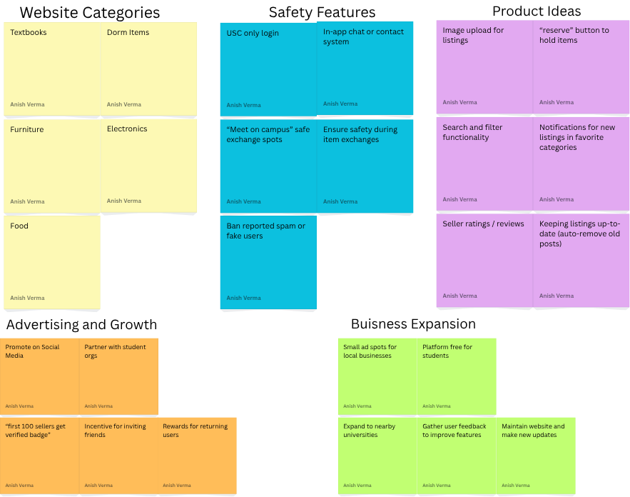
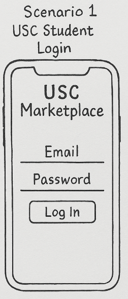

Highlighted projects
Problem Statement

USC students lack a safe, convenient, and USC-only platform to buy, sell, or exchange used items such as furniture, textbooks, and dorm supplies.
Affinity Diagram
This diagram organizes the project ideas into five clusters: Website Categories, Safety Features, Product Ideas, Advertisement and Growth, and Business Expansion showing how different aspects of the USC Marketplace concept come together to create a safe, functional, and scalable platform for students at the University.
Sketches
These images were created with generative Artificial Intelligence. These wireframe sketches show different user scenarios in the UofSC Marketplace mobile app. The first sketch shows the UofSC Student Login screen, where users sign in with their university email to access the platform. The second sketch pictures a Student Browsing Listings page, featuring item categories, filters, and product listings for quickly navigating. The third sketch represents a Professor Looking for Office Supplies, highlighting a simple search interface and clean layout for browsing available items.